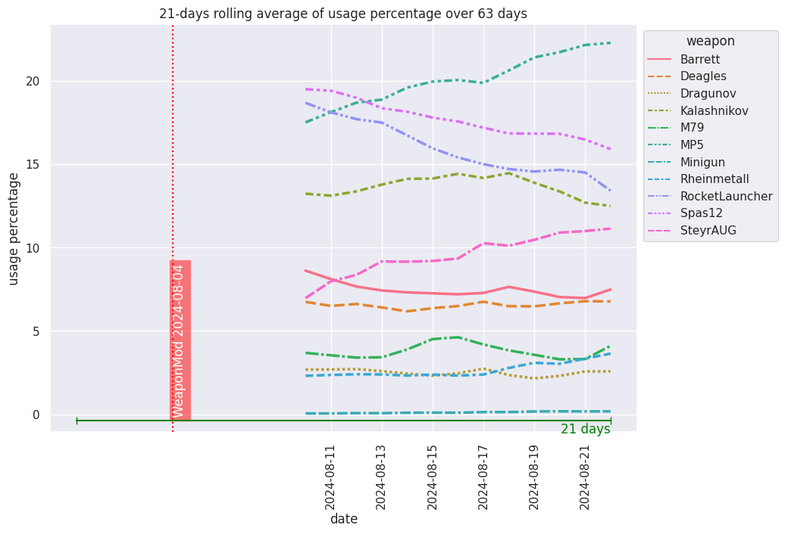
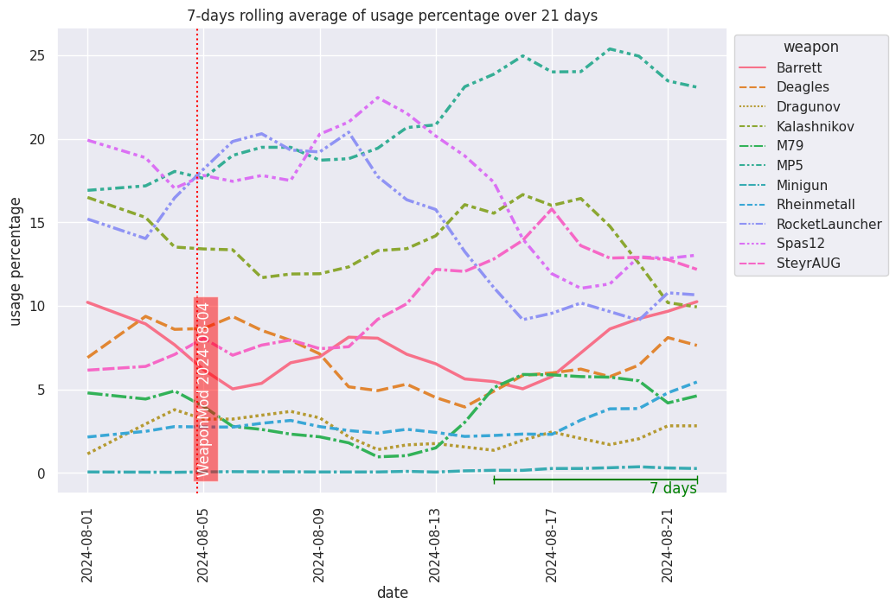
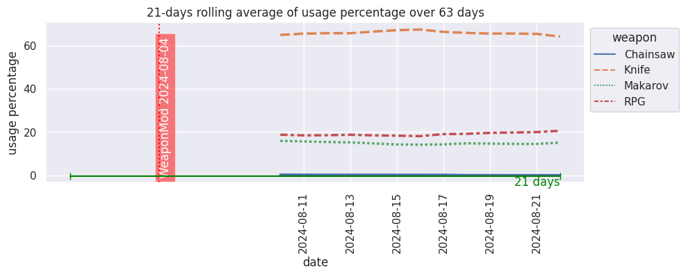
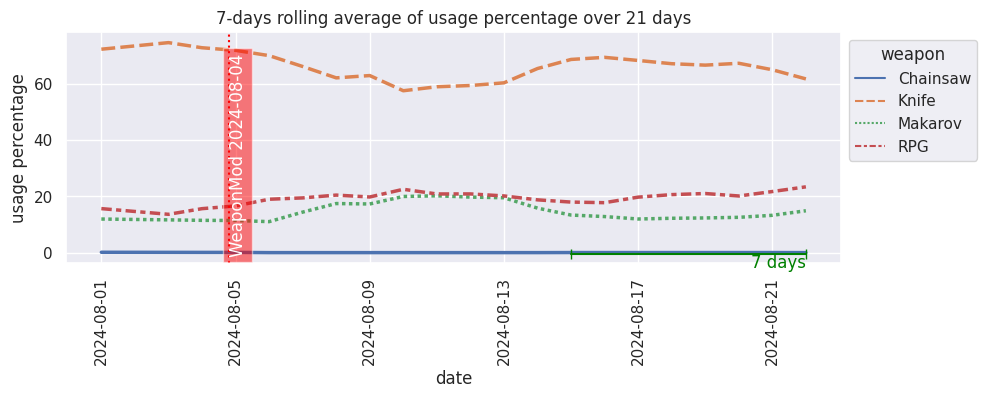

Weapon usage trends v2
Calculations of weapon usage are based on weapon_kills/all_kills ratio for each player and round as suggested by Fri. With this approach weapons that are getting less kills but more caps (eg m79) are treated more fairly compared to those that are good at getting high kill count (eg mp5, rheinmetall).
Data summary
| first_game | last_game | games_count | |
|---|---|---|---|
| 0 | 2022-11-21 01:23:16 | 2023-02-18 22:28:11 | 1189 |
| playlistCode | games_count | |
|---|---|---|
| 0 | CTF-Standard-2 | 42 |
| 1 | CTF-Standard-4 | 33 |
| 2 | CTF-Standard-6 | 1103 |
| 3 | CTF-Standard-8 | 7 |
| 4 | CTF-Test-2 | 4 |
Primary weapons
Chart data: csv

Chart data: csv

Secondary weapons
Chart data: csv

Chart data: csv
